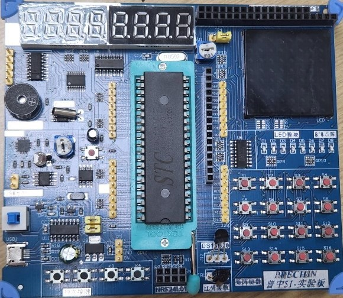

Lab Kit & Pin Map
The course uses the Puzhong 51 A2 development board with an STC89C52 microcontroller (8051-compatible, 11.0592 MHz crystal). Most modules are already wired to fixed pins, so you only need to know which pins to use. To learn how the chip itself works, see the 8051 Wiki.
Microcontroller at a glance
| MCU | STC89C52RC — 8051 core, 8 KB flash, 512 B RAM, 3 timers, UART, 4 I/O ports (P0–P3) |
|---|---|
| Crystal | 11.0592 MHz — 1 timer count ≈ 1.085 µs; TH1 = FDH gives 9600 baud |
| 1 ms delay (Timer 0, mode 1) | TH0 = FCH, TL0 = 67H |
| Programming | USB → CH340 serial chip → STC-ISP, cold start (power-cycle after clicking Download) |
| Select in STC-ISP | STC89C52RC/LE52RC |
Pin map
Taken from the course example programs and the board manual. Click a module to see an example that uses it. In C (SDCC) write pins with an underscore: P2.5 becomes P2_5.
| Module | Chip | Pins | Notes |
|---|---|---|---|
| 8 LEDs (D1–D8) | — | P2.0–P2.7 |
Active-low: CLR P2.0 turns D1 on. |
| Push buttons K1–K4 | — | K1 P3.1 · K2 P3.0 · K3 P3.2 · K4 P3.3 |
Read 0 when pressed. K3/K4 are also INT0/INT1. K1/K2 share the UART pins. |
| 4×4 matrix keypad | — | Rows P1.7–P1.4 · Columns P1.3–P1.0 |
Drive one row low at a time, then read the columns. |
| 8-digit 7-segment display | 74HC245, 74HC138 | Segments P0 · Digit select P2.2–P2.4 |
Common cathode (1 = segment on). Digit n → P2 = n × 4. Multiplex ~1 ms per digit. |
| LCD1602 character LCD | — | Data P0 · RS P2.6 · R/W P2.5 · E P2.7 |
Shares P0 with the 7-segment display. Adjust contrast with the potentiometer. |
| Passive buzzer | PNP transistor | P2.5 |
Toggle the pin at an audio frequency to make a tone. Shares the pin with LCD R/W and LED D6, which glows while a tone plays. |
| 8×8 LED matrix | 74HC595 | Columns P0 (active-low) · Rows via 595: SER P3.4, RCLK P3.5, SRCLK P3.6 |
Rows are shifted in serially, then latched with RCLK. |
| EEPROM (I²C) | AT24C02 | SDA P2.0 · SCL P2.1 |
256 bytes, keeps data without power. Shares pins with LEDs D1/D2. |
| Real-time clock | DS1302 | I/O P3.4 · CE P3.5 · SCLK P3.6 |
32.768 kHz crystal. Values are in BCD. |
| 12-bit ADC (SPI) | XPT2046 | DIN P3.4 · CS P3.5 · DCLK P3.6 · DOUT P3.7 |
Inputs: AIN0 potentiometer, AIN1 thermistor (NTC), AIN2 light sensor, AIN3 external (J52). |
| Temperature sensor (1-Wire) | DS18B20 | DQ P3.7 |
Plug the sensor into its socket with the flat side matching the board marking. |
| IR receiver | IR receiver module | P3.2 (INT0) |
NEC remote protocol; decode on the falling-edge interrupt. Shares the pin with K3. |
| USB serial (UART) | CH340 | RXD P3.0 · TXD P3.1 |
Same link used for programming. 9600 8N1 with TMOD = 20H, TH1 = FDH, SCON = 50H. |
| Motor driver | ULN2003 | Inputs P1.0–P1.5 · Outputs on terminal J47 |
Drives the DC motor (one direction) or a 5-wire stepper. Input high → output sinks current. |
| DAC / PWM output | LM358 | P2.1 |
Filtered PWM for an analog output. Shares the pin with EEPROM SCL. |
Shared pins. Several modules use the same pins (P0, P2.0/P2.1, P2.5, P3.0–P3.7). Only use one module on a shared pin at a time, or your outputs will interfere — for example, writing to the LCD also changes the 7-segment display.
Heads-up: the Mini Project 1 handout labels K1/K2 as P3.0/P3.1, while the example code and board manual use K1 = P3.1, K2 = P3.0. If a button doesn't respond, try the other pin. The board manual lists the buzzer on P1.5, but it was confirmed on this board to be on P2.5.
Board layout

For schematics and a description of every module, see chapter 2 and the “hardware design” section of each chapter in the board manual.